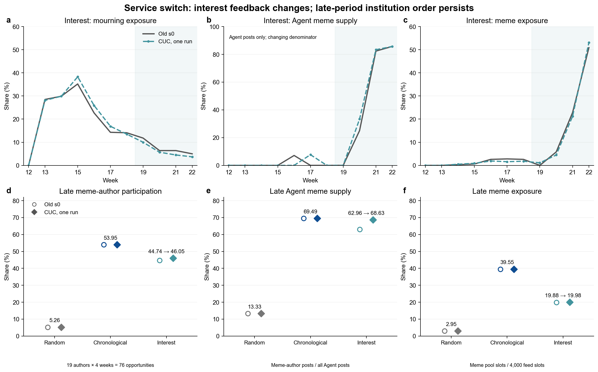

CUC 服务替换：制度排序保持，内容与兴趣回流有变化
AgentSociety · 指定 run 候选分析 · 2026-10-16 · H4 / 隔离分析命名 4_cuc
当前100人冻结配置下，新服务未反转主要制度排序：后期玩梗的作者参与、Agent供给份额和曝光均为时序 > 兴趣 > 随机。随机/时序数值相同有机制原因；正文更短并有事实、角色边界及后处理问题，不能称模型等价。
设计、数据与口径
100个Agent，W12–W22共11周，各制度一次。未显式设置环境seed或模型seed，环境实际默认0。主要配对旧experiment_2的random_s0、chronological_s0、interest_s0，复用其冻结输入；旧s1/s2只显示已有范围。
三臂各1100个唯一Agent×周行动、693步，发布与Agent账本一致，监督器和引擎均已退出。正文请求603次，额外0/330；年龄门控本地修正3条，不额外调用模型。3630仅约束正文外层请求，SDK observe/statistics和探测另计；SDK三次超时已恢复，正文零失败不代表服务零超时。
官方EDA：兴趣臂11行环境记录、1100行Agent记录，每周1000个feed槽位。全比较使用ReplayReader、环境状态与Agent账本，而非仅以总帖数判断。EDA明细 · 来源与校验和 · 完整性
固定作者类型、feed池标签、正文assigned_type词表分类分别对应参与/供给、曝光、文本诊断，不混称语义金标。后期作者参与分母是该类人口×4周（玩梗19×4=76）；Agent供给份额分母为该时段全部Agent帖；曝光分母包含外部与Agent全部槽位（W13为1000，后期4000）。跨周按计数合并，不取周比例无权平均。
方向保持，兴趣局部变化
| 制度 | 发布帖数（旧→新） | W13悼念作者参与 | W13悼念曝光（旧→新） | W19–22玩梗作者参与（旧→新） | W19–22 Agent玩梗供给份额（旧→新） | W19–22玩梗曝光（旧→新） |
|---|---|---|---|---|---|---|
| 随机 / Random | 176 → 176 | 2/22 (9.09%) → 同 / same | 7.90% → 7.90% | 4/76 (5.26%) → 同 / same | 4/30 (13.33%) → 同 / same | 118/4000 (2.95%) → 同 / same |
| 时序 / Chronological | 210 → 210 | 21/22 (95.45%) → 同 / same | 31.10% → 31.10% | 41/76 (53.95%) → 同 / same | 41/59 (69.49%) → 同 / same | 1582/4000 (39.55%) → 同 / same |
| 兴趣 / Interest | 214 → 217 | 21/22 (95.45%) → 同 / same | 28.50% → 28.10% | 34/76 (44.74%) → 35/76 (46.05%) | 34/54 (62.96%) → 35/51 (68.63%) | 795/4000 (19.875%) → 799/4000 (19.975%) |
W13是预设事件反应周，不预断所有轨迹在此全期达峰；兴趣悼念曝光最高周为W15。11周附表与峰位保留全部制度的悼念/玩梗供给与曝光。
随机与时序的11周环境Replay科学字段（排除时间元字段）、所查1100个决策数值字段、实际feed键序列/标签一致，但feed内Agent帖正文不同，完整提示不是固定不变。兴趣所查决策字段有815个Agent周不同，实际feed键序列999处不同，其中73个Agent周改变是否发言，净增3帖。这是机制内服务替换比较，不是固定同一完整prompt的纯模型测评。
兴趣后期Agent玩梗份额+5.66个百分点，来自玩梗34→35帖且全部Agent54→51帖；曝光仅+0.10个百分点。新W13兴趣悼念曝光28.1%低于旧三重复28.5%–37.0%，新后期Agent玩梗68.63%高于旧62.96%–67.21%。不能说全部变化都落在旧范围内；三个重复的极值不是置信区间。

五类作者的后期参与率
旧s0→新；发言Agent周/该类全部Agent周，非独立人数或正文语义分类。
| 制度 | 悼念 | 玩梗 | 教育 | 营销 | 其他 |
|---|---|---|---|---|---|
| 随机 / Random | 4/88 (4.55%) → 4/88 (4.55%) | 4/76 (5.26%) → 4/76 (5.26%) | 6/60 (10.00%) → 6/60 (10.00%) | 12/92 (13.04%) → 12/92 (13.04%) | 4/84 (4.76%) → 4/84 (4.76%) |
| 时序 / Chronological | 1/88 (1.14%) → 1/88 (1.14%) | 41/76 (53.95%) → 41/76 (53.95%) | 3/60 (5.00%) → 3/60 (5.00%) | 13/92 (14.13%) → 13/92 (14.13%) | 1/84 (1.19%) → 1/84 (1.19%) |
| 兴趣 / Interest | 1/88 (1.14%) → 0/88 (0.00%) | 34/76 (44.74%) → 35/76 (46.05%) | 5/60 (8.33%) → 2/60 (3.33%) | 14/92 (15.22%) → 13/92 (14.13%) | 0/84 (0.00%) → 1/84 (1.19%) |
正文可完成生成，质量未证明等价
| 制度 | 首次生成数 旧→新 | 首次空输出 旧→新 | 本地年龄门控修正 旧→新 | 正文重写 旧→新 | 发布正文中位字符数 旧→新 | 发布正文>300字符 旧→新 |
|---|---|---|---|---|---|---|
| Random | 176 → 176 | 1 → 0 | 0 → 0 | 1 → 0 | 216 → 175.5 | 2 → 0 |
| Chronological | 210 → 210 | 0 → 0 | 0 → 1 | 0 → 0 | 202.5 → 176 | 5 → 2 |
| Interest | 214 → 217 | 0 → 0 | 0 → 2 | 0 → 0 | 205.5 → 178 | 0 → 0 |
旧600次首次生成有1次空输出后重写；新603次无空输出和接口标记拒答，无付费正文重写或兜底。本地年龄门控修改3/603=0.50%，但其中时序77/W13的“三十八岁，家里也有正在读书的孩子”与38岁persona一致，更像自述误删；只有兴趣58、85/W13两条审读为无源人物年龄。不能将门控命中率冒充幻觉率。
最终正文中位长度三制度均更短；NFKC去空白后的制度内全文完全重复为零，不排除套式表达。>300字符仅诊断提示偏好，实际上限400。长度按最终ENV发布记录，原始与发布文本分别保留。
按制度×五类型×前/中/后期的共同发言Agent周，SHA256稳定排序每格最多2对，共59对118篇。逐侧核对实际提示、persona、首次生成、最终发布和feed；稀疏格不补造。补充异常样本不混入59对分母。助手审读无独立人类金标、无收费模型裁判，不能外推总体幻觉率。59对仅15对完整messages相同、44对不同；随机/时序回流正文也会使提示不同，兴趣还会改变feed键。
固定样本均能回应所见，未发现无所见依据提前宣告死亡；角色“尚待确认”不算拒答。原始无源人物年龄旧0/59、新2/59，发布后均0/59。例子可按ID在逐对注释定位：
interest:58:2026-W13新“才41岁”无提示依据，被删后正文可读；旧以“若属实”回应所见讣告。interest:85:2026-W13新“才四十出头吧”被删，留下“愣了一下。吧，孩子还那么小”，同时暴露原始事实约束与后处理损伤。- 补充
new:chronological:77:2026-W13自述年龄疑遭误删；new:chronological:86:2026-W20原始432字符逐字空格，截至399字符以“建 议 出”结尾。删除成功不等于自然、完整。 random:22:2026-W19把自己的旧帖当“@22说的”回应，混淆自他；random:91:2026-W17新增家庭背景与其他来源相近，须与人物硬事实分开评价。- 旧侧
random:19:2026-W17将“轻松过线/核心600母题”强化为“600题保过”；interest:61:2026-W13将讣告日期写成自己看到的时间。旧服务不是无错误金标准。 - 新时序87、32/W12共享25字符开场，旧营销/玩梗也有套式；新
interest:4:2026-W21“火车头/新闻学”确有来源，幽默延展不能机械计作事实幻觉。
更短不自动等于更差；本次证据支持可完成短帖任务，同时存在来源边界、角色细节、文本自然性问题。完整审读与补充样本。
正文怎样进入数值回流
环境根据feed标签和冻结参数决定发言，LLM写已决定发布的正文。词表倾向分数进入兴趣推荐；随机抽样和时序排序不按该分数选帖，故前两臂数值一致不能证明语言能力相同。
兴趣W12 Agent57正文倾向先变：营销3.4826→3.2178、教育0.4975→0.7426。W13 Agent80教育标签1/10→2/10，效用0.8883→1.1117，两侧均发言；Agent90首次发言翻转，效用1.0401→0.8764，由发布转沉默。后续曝光、供给及累积疲劳可传播差异；这不是单个词导致全部结果的因果识别。可追踪链条。
速度、结论与适用边界
北京时间10月16日13:51:50–19:35:25，新批含调度343.59分钟，距12小时上限约6小时16分。旧s0三臂同口径176.34分钟，新批约1.95倍耗时；旧引擎各57.97/58.48/59.37分钟，合计175.83。跨时段服务负载、SDK及调度混合，不能认定固有模型速度下降1.95倍，价格未核实。原始时间与计算。
当前100人固定机制与输入的服务替换检查，主要制度排序保持，正文更短但质量未证等价，兴趣反馈局部变化。新每制度仅一次，无跨重复显著性推断、总体幻觉率或能力排名；仿真不直接证明现实平台因果。
请求cuc/deepseek返回deepseek-v4.1-flash及-2/-3/-4；旧请求deepseek-v4-1-flash-260910返回deepseek-v4-1-flash。别名和后台不确定，不能假定底层模型不同。本轮未回答500/1000人的可信度与成本。
来源、复算与交付
- 提取脚本 · 来源/SHA256/复算命令 · 配对差值 · 制度差值
- 逐周指标 · 五类参与率 · 原始/发布质量统计
- 抽样规则 · 正文和实际feed · 补充异常
- 中文Markdown · English copy · 综合判断 · 可编辑SVG